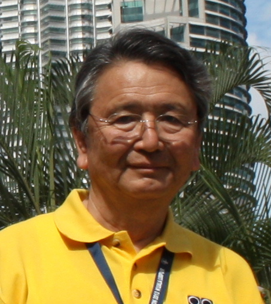
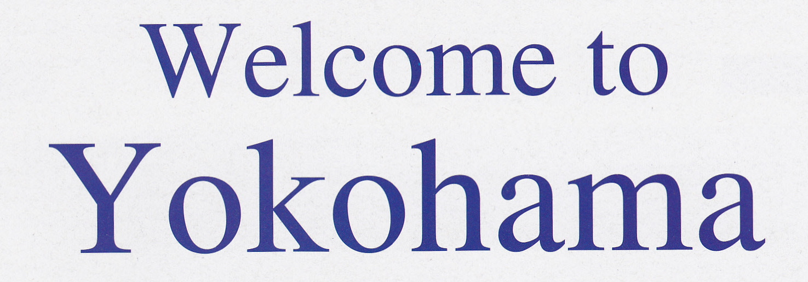
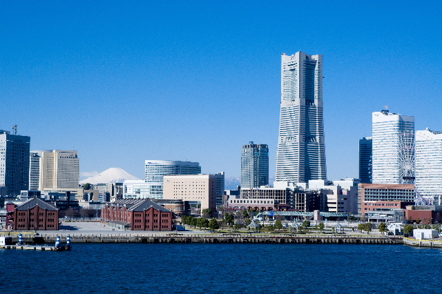

|


41st SEANET YOKOHAMA JAPAN
05th-07th, October 2013
 Greetings to all Greetings to all
It is our greatest pleasure to have amateur radio friends from all over the world to 41st SEANET CONVENTION in Yokohama Japan.
Our organizing committee are consisting of many Ham clubs and groups,
The SEANET was established in 1964 to assist radio communication of medical emergency and sea disasters in South East Asia.
But after many years, SEANET is not only supporting disasters but also changing into enjoying strong friendship.
I was rather against to accept to have SEANET convention here in Japan. Because everything is so expensive compare to South East Asian countries. We are looking forward to seeing you on October 5th this year. 73 and 88
 Tac Yonemura JA1BRK : chairperson of 41st SEANET CONVENTION Yokohama
|


|
What kind of city is Yokohama?
Yokohama is a city that holds a special place in the hearts of most Japanese. It is a vibrant city that, on holidays, draws people from all over the country, whether they are young couples on dates or families with children. The reason the city attracts so many visitors lies in its many and varied facets. You can take a walk along the harbor while admiring the buildings or enjoy shopping or good food at the many malls and restaurants or maybe experience the wonders of Chinatown. The waterfront area known as Minato Mirai 21 is particularly popular. With the many festivals and events held throughout the year, Yokohama is a lively and colorful city. |
Yokohama
SEANET 2013 Itinerary
| DAY | TIME | EVENT | VENUE |
|---|---|---|---|
Saturday, 05 Oct.2013 |
1400 - 1800 1800 - 2100 |
Arrivals & Regetration Welcome Party |
NAVIOS YOKOHAMA HOTEL |
Sunday, 06 Oct.2013 |
0700 - 1000 0930 - 1800 - 2100 |
Breakfast SIGHTSEEING in Yokohama,Sankeien etc. GALA PARTY |
NAVIOS YOKOHAMA HOTEL Lunch (Chinatown) Yokohama Country & Athletic Club |
Monday, 07 Oct.2013 |
0900 - 1230 | Breakfast Seminar (See "PROGRAMME") Farewell Lunch 1230- |
NAVIOS YOKOHAMA HOTEL |

VENUE FOR SEANET "NAVIOS YOKOHAMA HOTEL"
NAVIOS YOKOHAMA・ACCESS(English Info-Page)
|
ACCESS to Yokohama
Yokohama is situated about 30km from the center of Tokyo. Connections can be made to other major cities by Shinkansen(bullet train) or other trains. Also, trains and buses are available from Tokyo International Airport(Haneda), which has expanded its international service, as well as Narita International Airport. |
|
|
|
|
|
|
|
|
|